1:45:31 · 23 OPERE
Su un recente testo di Johann Chapoutot, storico della Sorbona.
Il filo del discorso
Il relatore dedica una lettura fortemente polemica a Le Grand Récit. Introduction à l’histoire de notre temps di Johann Chapoutot, pubblicato dalle Presses universitaires de France nel 2021. Il titolo viene tradotto oralmente come Il grande racconto; ciò non identifica un’edizione italiana. L’analisi riguarda soprattutto il quarto capitolo, dedicato a ragioni segrete, causalità diabolica e complotto.
Leggi la sintesi completaRiduci la sintesi
Gli indizi interni sono compatibili con la primavera del 2022: elezioni presidenziali francesi in corso, guerra in Ucraina già iniziata e Nancy Pelosi indicata come ottantaduenne. Non viene fissato un giorno di registrazione. La lunga introduzione collega il libro alla critica dell’industria culturale e delle autorità che, secondo il relatore, scambiano il consenso istituzionale per verità. Sono evocati Fabio Fazio, il sostegno di Bernard-Henri Lévy a Macron, una giornalista non nominata e precedenti interventi del canale. La Ballata delle madri di Pasolini e il discorso di Solženicyn a Harvard diventano riferimenti contrapposti alla complicità che egli attribuisce a media e accademia. Le ingiurie non sono valutazioni cliniche né prove di disonestà professionale; la formazione umanistica di una persona non determina da sola se un suo specifico argomento scientifico sia corretto. L’obiezione principale rivolta a Chapoutot riguarda il metodo. Il relatore chiede che termini come senso, razionalità e pseudodocumentario siano definiti e accompagnati da esempi e riferimenti. Legge nelle espressioni sulla nostalgia del senso, sul risentimento o sul bisogno psicologico un modo di screditare chi dissente. Ritiene che la scelta di esempi estremi costruisca un avversario facile da liquidare e lasci fuori complotti storici, inchieste e documenti importanti. Questo è il suo giudizio su un capitolo letto per estratti, non una dimostrazione che ogni passo del libro sia privo di fonti o che Chapoutot neghi l’esistenza di qualunque cospirazione. La stessa lettura riferisce infatti un passaggio nel quale l’autore riconosce complotti e cospirazioni nella realtà politica ed economica. Occorre distinguere due questioni che la polemica tende a sovrapporre. Spiegare le motivazioni sociali o psicologiche di una credenza non decide, da solo, se sia vera o falsa; allo stesso modo, l’esistenza di cospirazioni accertate non prova automaticamente una diversa ipotesi contemporanea. La richiesta di fonti specifiche anche a chi critica impone lo stesso criterio alle supposizioni del relatore su pressioni occulte, interessi e intenzioni degli autori. I richiami a Nobel e medici dissenzienti non sostituiscono l’analisi delle prove; il prestigio personale non è un criterio ultimo di verità. La discussione si allarga alla Rivoluzione francese attraverso le Memorie sul giacobinismo di Barruel. Il relatore contesta il trattamento della religione, della massoneria, della Vandea e della funzione delle donne nei salotti. La richiesta di distinguere fasi democratiche, violenza, Terrore e sviluppi successivi è diversa dall’idea che l’intera rivoluzione dipenda da un unico piano segreto. Anche il confronto con Norimberga richiede precisione: cospirazione, crimini contro la pace e crimini contro l’umanità non sono categorie intercambiabili. Nella fattispecie federale statunitense richiamata dalla legge, non basta che due persone producano un danno qualsiasi: occorrono gli elementi specifici dell’accordo illecito e, per la norma generale, un atto diretto a realizzarlo. Il tema del potere sulle idee comprende copyright, censura e piattaforme. Il relatore vede nell’indisponibilità di alcuni libri un ostacolo al dibattito, ma il diritto d’autore non stabilisce universalmente un divieto di ristampa di settantacinque anni: durata, titolarità e licenza sono concetti diversi. Nel quadro europeo ordinario la durata è la vita dell’autore più settant’anni. La libertà di parola e le scelte editoriali di soggetti privati richiedono inoltre di distinguere azione statale e attività privata. Le analogie con Galileo esprimono la sua critica dell’autorità; la documentazione storica distingue la minaccia di tortura da una tortura fisica effettivamente subita, mentre la celebre formula Eppur si muove non va assunta come verbale dell’interrogatorio. Nella parte americana la lettura investe il 6 gennaio 2021, Mike Pence, Nancy Pelosi, QAnon ed Epstein. Il racconto dell’ingresso al Campidoglio come episodio semplicemente consentito e senza intenzioni violente non rende conto degli accessi forzati documentati. Ashli Babbitt era disarmata, ma il documento del Dipartimento di giustizia del 2021 descrive un colpo alla spalla, non al volto, e spiega perché non furono promosse accuse penali contro l’agente. Questo non sostituisce ogni valutazione politica con un’etichetta; impedisce però di costruire la discussione su dettagli materiali inesatti. Il termine insurrezione, i reati contestati ai singoli e la responsabilità di ogni partecipante richiedono livelli di analisi distinti. Per Epstein il relatore contrappone la spiegazione del suicidio ad altri casi di morte in carcere e formula sospetti. I precedenti non dimostrano che un caso diverso sia omicidio. Il verdetto di colpevolezza di Ghislaine Maxwell era già stato emesso il 29 dicembre 2021: nella primavera 2022 erano ancora da distinguere la successiva fase di pena e gli altri sviluppi processuali dal dibattimento concluso. L’esito medico-legale ufficiale della morte di Epstein e le gravi carenze di sorveglianza devono essere tenuti separati da una prova di assassinio. I nomi di persone influenti non bastano a dimostrare responsabilità penali individuali. La conclusione torna ai rapporti fra letteratura, cinema e interpretazione storica. Blackadder, il film dei Monty Python del 1971, Matrix, JFK e The X-Files non sono lo stesso genere di fonte di un’inchiesta o di un documento di Stato. Il richiamo a JFK richiede una correzione cronologica: il comitato parlamentare HSCA formulò la conclusione di probabile cospirazione nel 1979, prima del film di Oliver Stone del 1991. Il ruolo documentato del film riguarda il dibattito che contribuì alla legge del 1992 sull’apertura degli archivi. Knight, Bloom, Snyder e Poliakov entrano come riferimenti di una controversia su lettura critica, sanità, istruzione e antisemitismo; il loro uso polemico non equivale a una verifica integrale delle rispettive opere. Il problema che rimane è come distinguere una critica documentata, una spiegazione dei comportamenti e una congettura capace di confermare qualunque risultato.
I libri nel discorso

La ballata delle madri
Note sul riferimento
Copertina della raccolta: Garzanti · 2001
La ballata delle madri è contenuta in Poesia in forma di rosa. L’immagine mostra la raccolta Garzanti del 2001, con prefazione di Edoardo Esposito, non un volume autonomo della poesia né l’edizione del video.
Riferimento ricavato dalla trascrizione automatica.

Il virus che rende folli
Note sul riferimento
Copertina: La nave di Teseo · Le onde · 2020
Immagine autentica dell’opera, controllata visivamente; l’edizione di riferimento non è attribuita al filmato.
Riferimento ricavato dalla trascrizione automatica.

La società del contrario
Note sul riferimento
Copertina: Zambon · 2005
Copertina autentica dell’edizione di riferimento, controllata visivamente. Non identifica l’esemplare letto o citato nel video.
Riferimento ricavato dalla trascrizione automatica.

A World Split Apart (Discorso di Harvard)
Note sul riferimento
Copertina: Harper & Row · edizione bilingue russo e inglese · 1978
Immagine autentica dell’opera, controllata visivamente; l’edizione di riferimento non è attribuita al filmato.
Riferimento ricavato dalla trascrizione automatica.
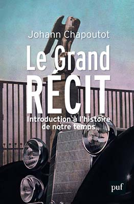
Le Grand Récit. Introduction à l’histoire de notre temps
Note sul riferimento
Copertina: PUF, 2021, copertina francese pubblicata dalla Sorbonne
Copertina autentica del libro francese, autore, titolo, sottotitolo e marchio PUF leggibili. Non una traduzione italiana inventata, non un altro libro dell’autore; l’esatta tiratura in mano al relatore non è certificata.
Riferimento ricavato dalla trascrizione automatica.

La pensée unique (Il pensiero unico)
Note sul riferimento
Prima pagina: Prima pagina del numero originale · gennaio 1995
È la prima pagina del periodico che contiene l’editoriale, non la copertina di un libro autonomo.
Riferimento ricavato dalla trascrizione automatica.

I Protocolli dei savi di Sion (falso antisemita)
Note sul riferimento
Copertina storica di un falso antisemita: The Jewish Peril · Londra, Eyre & Spottiswoode · 1920
Fotografia museale della copertina dell’edizione inglese del 1920, conservata dall’USHMM. È mostrata come documento storico di propaganda, senza attribuire questa edizione al video o avallare le sue falsificazioni.
Riferimento ricavato dalla trascrizione automatica.

Beffe e beffatori in nome di una crisi
Note sul riferimento
Copertina: Lulu, 2021
Riferimento ricavato dalla trascrizione automatica.

Viaggio al termine della notte
Identificazione probabile
Note sul riferimento
Copertina: Corbaccio · 2011
Copertina autentica controllata visivamente. Edizione di riferimento; non identifica l’esemplare usato o citato nel video.
Il relatore, passando attraverso Chapoutot, richiama Céline e la formula sull’amore alla portata dei barboncini. Il parallelo distintivo è collazionato nel dialogo iniziale fra Bardamu e Arthur di Voyage au bout de la nuit. Il titolo del romanzo non viene pronunciato e non è attestata la consultazione diretta del libro da parte del relatore. Rinvio redazionale probabile e mediato, non citazione letterale italiana o identificazione dell’edizione del video. Il testo francese dell’estratto editoriale Gallimard parla dell’infinito, mentre la trascrizione automatica italiana riporta assoluto. Collazionati frontespizio, copyright e dialogo iniziale dell’estratto, non tutto il romanzo né l’intero estratto. La copertina è dell’edizione Corbaccio 2011, distinta dall’estratto Gallimard con copyright 1952 e dalla copia ignota del video.

Mein Kampf
Note sul riferimento
Copertina: Hitler, Mein Kampf. Eine kritische Edition, Institut für Zeitgeschichte, 2016, due volumi, a cura di Christian Hartmann, Thomas Vordermayer, Othmar Plöckinger e Roman Töppel; ISBN 9783981405231.
Immagine autentica della copertina grigia dell’edizione critica dell’Institut für Zeitgeschichte. Si tratta di un’opera in due volumi: l’immagine piana di copertina non è dichiarata fotografia completa dei due volumi né edizione originale nazista. La ristampa precisa illustrata non è attribuita dal solo ISBN.
Riferimento ricavato dalla trascrizione automatica.
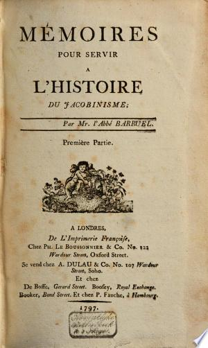
Mémoires pour servir à l’histoire du jacobinisme
Note sul riferimento
Copertina: Mémoires…, Première Partie, Imprimerie Françoise, Londra 1797, copia KB digitalizzata
Frontespizio autentico della sola Première Partie: titolo, abbé Barruel, luogo, imprint e data 1797 leggibili. Non copertina moderna né immagine dell’intera raccolta; edizione non confermata nel video.
Riferimento ricavato dalla trascrizione automatica.
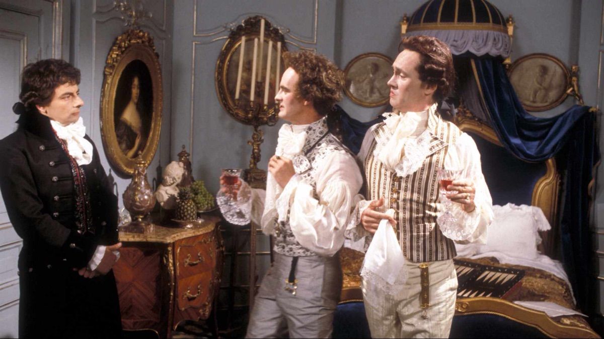
Nob and Nobility (Blackadder the Third, episodio 3)
Identificazione probabile
Note sul riferimento
Copertina: Fotografia BBC distribuita nella scheda di Nob and Nobility, 1 ottobre 1987
Immagine autentica dell’episodio: Blackadder con due aristocratici in costume a corte. Fotografia documentaria di scena, non copertina di libro o raccolta di sceneggiature; distinta dall’immagine di Samuel Johnson nell’episodio Ink and Incapability.
Riferimento ricavato dalla trascrizione automatica.
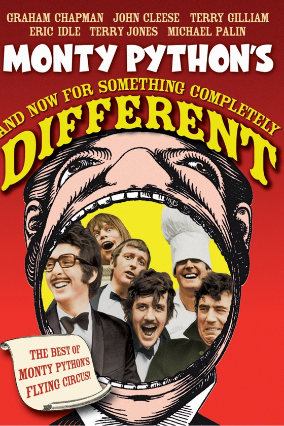
And Now for Something Completely Different
Note sul riferimento
Copertina: Key art home-video ufficiale Sony Pictures, film Columbia 1971
Immagine promozionale autentica fornita da Sony per il film: titolo completo, nomi del gruppo e riferimento a Flying Circus leggibili. Non poster certificato di prima uscita, non cover della sola serie TV né di uno sketch isolato.
Riferimento ricavato dalla trascrizione automatica.

Pentagon Papers (Report of the Office of the Secretary of Defense Vietnam Task Force)
Note sul riferimento
Prima pagina del fascicolo introduttivo e indice: Rapporto finale del 1969 · fascicolo introduttivo e indice · scansione NARA declassificata nel 2011
Prima pagina del fascicolo introduttivo e indice conservato dai National Archives; non è la copertina di un libro e non riproduce l’intero rapporto. La voce riguarda il corpus documentario.
Riferimento ricavato dalla trascrizione automatica.
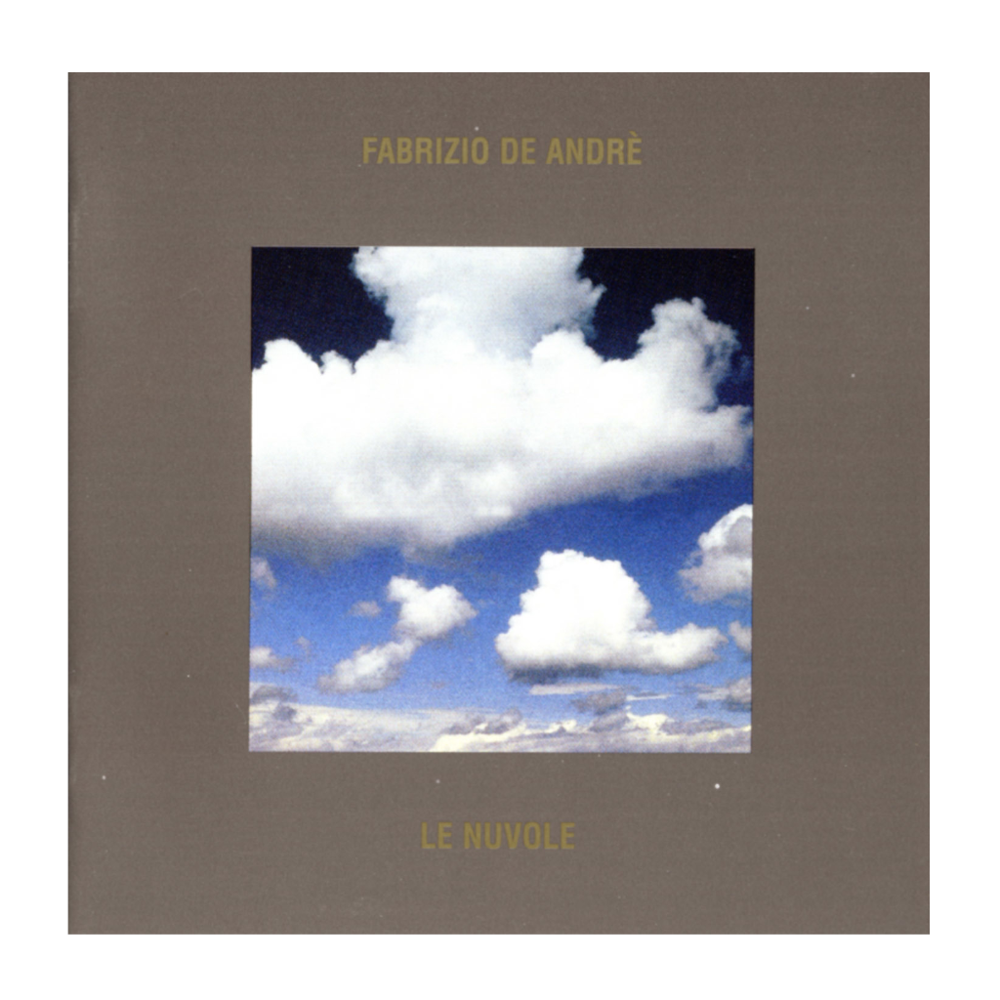
Don Raffaè
Identificazione probabile
Note sul riferimento
Copertina: Le nuvole, edizione Way Point Sony 13 settembre 2024, CD 19658867632, contenente Don Raffaè
Copertina autentica dell’album raccolta Le nuvole, non singolo autonomo Don Raffaè. Autore e titolo album leggibili; tracklist editoriale conferma il brano. La ristampa 2024 è successiva al video e non ne identifica la copia; il brano è del 1990.
Riferimento ricavato dalla trascrizione automatica.
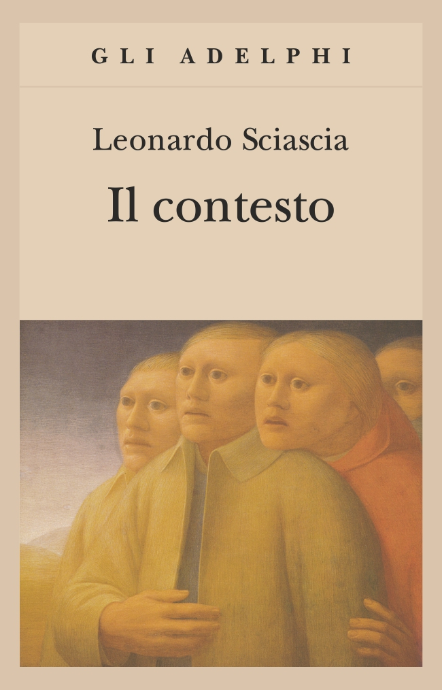
Il contesto. Una parodia
Note sul riferimento
Copertina: Copertina autentica della edizione Gli Adelphi 286, prima uscita nella collana 2006, ISBN 9788845920585. Il catalogo corrente indica dodicesima edizione e 114 pagine; non si attribuisce tale ristampa alla copia del relatore. Prima pubblicazione del romanzo 1971; diversa edizione Fabula 1994. In copertina un particolare di Osservatori di George Tooker, non un dipinto nominato dal filmato.
Ristampa Gli Adelphi con immagine di George Tooker. La scena della Inquisizione ricordata alla fine del filmato è un riferimento distinto e non è risolta mediante questa copertina.
Riferimento ricavato dalla trascrizione automatica.
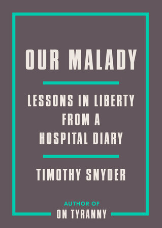
Our Malady: Lessons in Liberty from a Hospital Diary
Identificazione probabile
Note sul riferimento
Copertina: Crown, 8 settembre 2020, 192 pagine, ISBN 9780593238899. Saggio che muove dalla esperienza ospedaliera dello autore; copertina inglese ufficiale, non attribuita con certezza a una copia nel filmato.
Identificazione probabile: il titolo non è pronunciato nella introduzione del video. Il catalogo Crown riscontra il ricovero del 29 dicembre 2019 e il nesso fra sanità, diritti e libertà. La corrispondenza non equivale a riscontro di ogni dettaglio clinico riferito dal relatore.
Riferimento ricavato dalla trascrizione automatica.

Matrix (The Matrix,1999)
Note sul riferimento
Locandina del film Matrix 1999 dal catalogo digitale: Film 1999, regia di Lana e Lilly Wachowski, Keanu Reeves, Laurence Fishburne, Carrie-Anne Moss. Locandina orizzontale del catalogo digitale, non copertina narrativa o fotogramma della specifica scena citata.
Visti interamente titolo e personaggi Neo, Morpheus, Trinity. Immagine dalla pagina del film del 1999; non identifica una specifica edizione DVD.
Riferimento ricavato dalla trascrizione automatica.
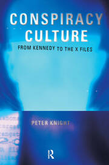
Conspiracy Culture: From Kennedy to The X Files
Note sul riferimento
Copertina: Routledge, copyright 2000, ISBN 9780415189781
Copertina autentica fornita dall’editore: titolo, sottotitolo e Peter Knight leggibili. Edizione di riferimento, non attribuita a un esemplare mostrato nel video.
Riferimento ricavato dalla trascrizione automatica.

The Closing of the American Mind
Note sul riferimento
Copertina: Simon & Schuster · edizione del venticinquennale · 2012 · testo inglese
Copertina autentica dell’edizione di riferimento, controllata visivamente. Non identifica l’esemplare letto o citato nel video.
Riferimento ricavato dalla trascrizione automatica.
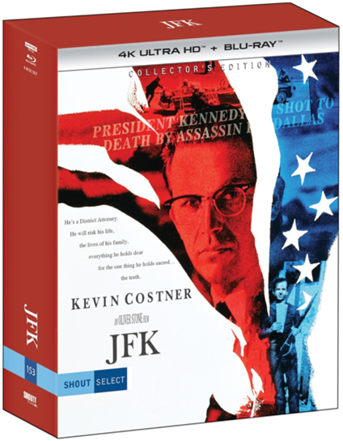
JFK
Note sul riferimento
Copertina: JFK Collector’s Edition, Shout Select / Duplitech, 4 K UHD + Blu-ray, 19 dicembre 2023
Fotografia autentica del cofanetto home-video ufficiale, pubblicata dal produttore del restauro: Kevin Costner, titolo e Oliver Stone leggibili. Film 1991, edizione d’immagine 2023 successiva al video, non attribuita all’esemplare visto dal relatore; non il documentario JFK Revisited.
Riferimento ricavato dalla trascrizione automatica.
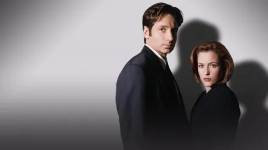
The X-Files
Note sul riferimento
Immagine promozionale ufficiale della serie The X-Files: Serie creata da Chris Carter, 1993–2018, undici stagioni. Immagine promozionale ufficiale Disney+ con David Duchovny e Gillian Anderson. Il riferimento è alla serie; non si confonde il poster nell’ufficio di Mulder con il film del 2008 The X-Files: I Want to Believe.
Immagine autentica vista interamente: Mulder e Scully, tratta dalla pagina ufficiale della serie. Non è la fotografia del poster dell’ufficio e non dimostra quale episodio sia evocato; non è copertina di libro o locandina del film 2008.
Riferimento ricavato dalla trascrizione automatica.
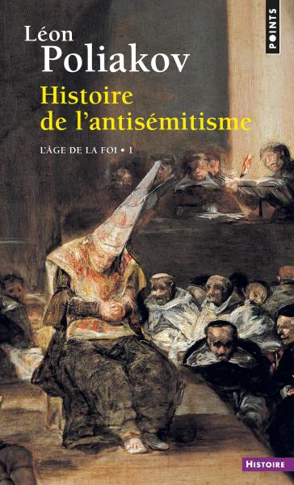
Histoire de l’antisémitisme
Note sul riferimento
Copertina: Histoire de l’antisémitisme, 1. L’Âge de la foi, Points 1 febbraio 2018, ISBN 9782757872086
Copertina autentica del solo volume 1 della rielaborazione in due tomi Points, non cofanetto o immagine collettiva dei quattro volumi originari. Titolo, autore e L’Âge de la foi – 1 leggibili. Volume ed edizione non identificati nel video.
Riferimento ricavato dalla trascrizione automatica.